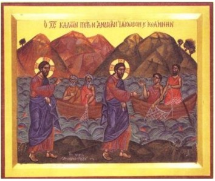

Had Jesus met these disciples previously? Either way, their abandonment of their livelihood and father straightway is certainly intended to emphasize the renunciation involved in following Jesus and a further blow to family values.

Mt 4:18 And Jesus, walking by the sea of Galilee, saw two brethren, Simon called Peter, and Andrew his brother, casting a net into the sea: for they were fishers. 4:19 And he saith unto them, Follow me, and I will make you fishers of men. 4:20 And they straightway left their nets, and followed him. 4:21 And going on from thence, he saw other two brethren, James the son of Zebedee, and John his brother, in a ship with Zebedee their father, mending their nets; and he called them. 4:22 And they immediately left the ship and their father, and followed him.
~~~~~~~